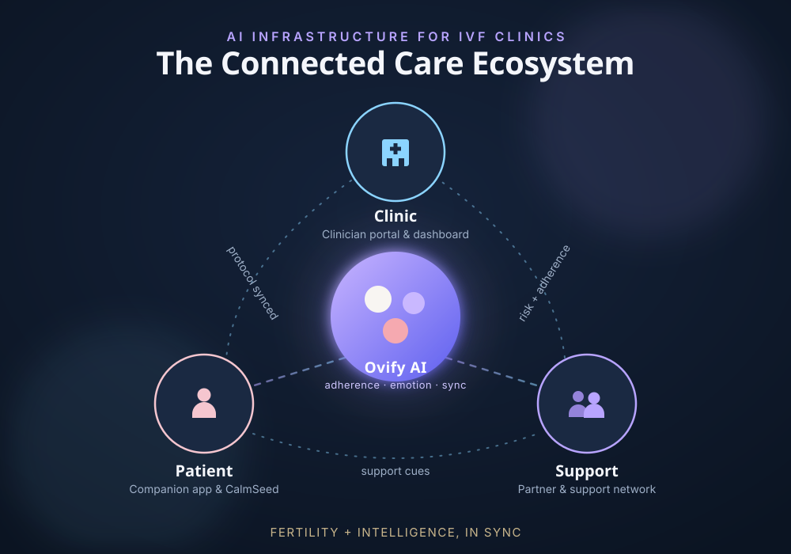

Ovify integrates patient care coordination by connecting patients, support networks, and clinics in a single ecosystem, reducing compliance errors and nurse workload.

Replacing complexity and chaos with a structured, calm, and AI-supported system.
Translates complex clinic prescriptions into secure, easy-to-follow daily checklists to boost adherence.
Engages support companions in daily coordination to divide the cycle burden and reduce patient anxiety.
Empowers clinical teams to build protocols in seconds, push updates instantly, and track adherence in real time.
A single, connected flow supporting the patient, support, and clinic from setup to cycle success.
The clinic initiates or updates the treatment plan. The Patient App reflects updates instantly, and the Support App aligns automatically to support the new schedule.
Onboard patients and inputs protocol via tablet in under 60 seconds.
Receives updated daily schedule on their phone instantly.
Alerted to new calendar items and task-sharing prompts.
Every medication, scan, and instruction is structured without paper notes. The support provides practical assistance on specific injection days, knowing exactly what to do.
Monitors checkmarks on the dashboard quietly.
Follows clean morning/evening instructions with guidance.
Receives real-time alerts to assist and coordinate care support.
The AI engine monitors patient adherence and stress patterns. Missed doses or stress spikes trigger predictive alerts on the clinic dashboard automatically for timely intervention.
Receives early-warning alerts before a cycle is put at risk.
Initiates CalmSeed voice check-in for pre-injection regulation.
Prompted to check in when patient's stress score spikes.
A coordinated, error-free IVF cycle. The patient remains compliant, the support assists actively, and the clinic maintains complete operational control.
Saves hours of nurse workload and boosts cycle success.
Maintains nervous system stability throughout treatment.
Participates actively as a supportive teammates.
From fragmented patient messaging to automated adherence intelligence.